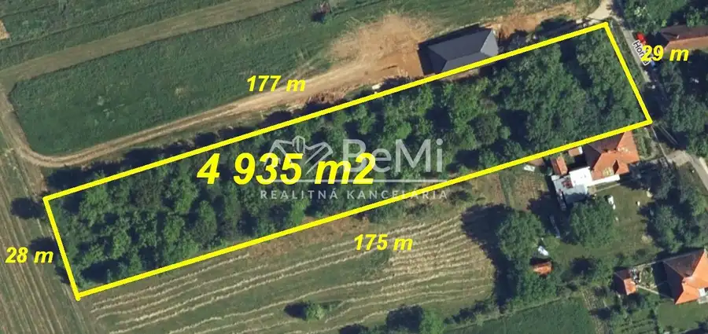
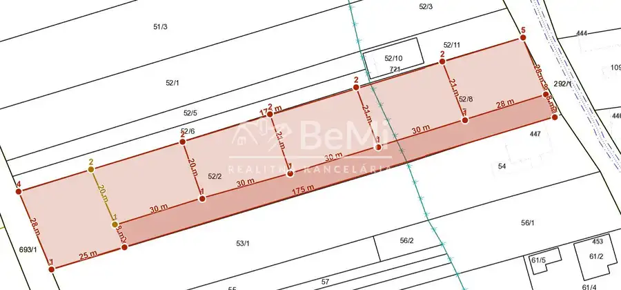
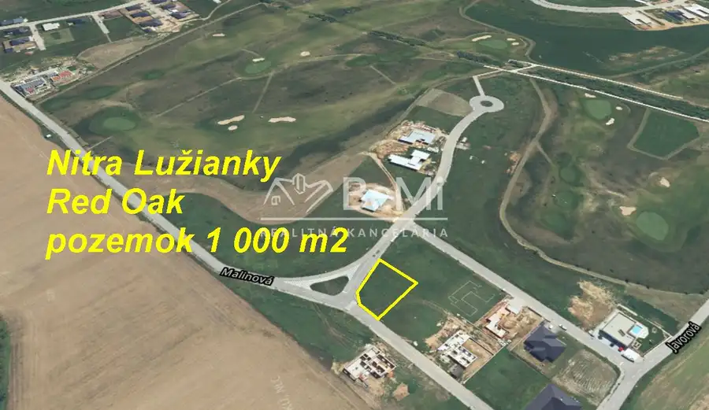
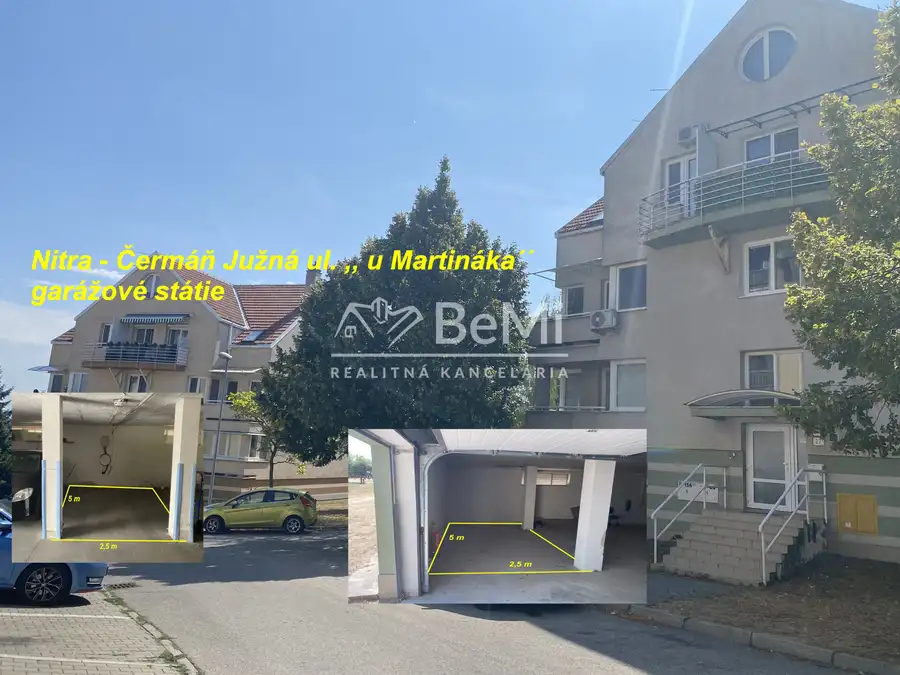
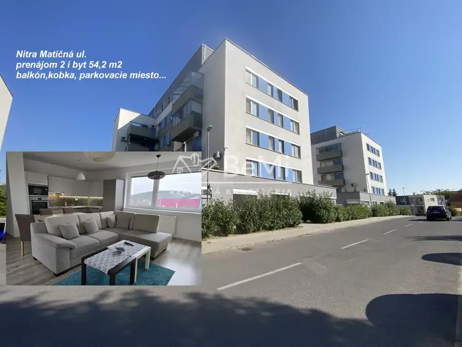

Predaj · Pozemok
Sľažany pozemok 4 935 m2 ID 628-14-MIG
Sľažany
249 000 €50 € za m²


- Plocha4935 m²
- VlastníctvoOsobné
O nehnuteľnosti
628-14-MIGPozemok SľažanyNa predaj pozemok s rozlohou 4 935 m2 v obci Sľažany, v kľudnej, okrajovej časti ...Rozsiahly pozemok s ideálnymi rozmermi poskytuje možnosť vytvorenia až 6 samostatných pozemkov ...( cca 600 m 2 – prípadne iné – podľa potrieb investora)Prístup z obecnej asfaltovej cesty...– rozmery viď foto v galérii (vstupná šírka 29 m)...Dostupné všetky IS - pred pozemkom ( nutné preveriť možnosť napojenia podľa investičného zámeru)...Blízko napojenia na diaľnicu R1 (smer NR aj BB)Sľažany – Nitra – 23 kmSľažany – Zlaté Moravce – 6 kmNAŠE CENY SÚ VRÁTANE PROVÍZIE ZA KOMPLETNÝ SERVIS A SÚ SCHVÁLENÉ MAJITEĽOM. Mgr. Michal Geletič 0905114074geletic@realitybemi.sk
Parametre
- Druh
- Pozemok pre rodinné domy
- Dátum zverejnenia
- 08. 07. 2026
- Plocha pozemku
- 4935 m²
- Typ
- Predaj
- Vlastníctvo
- Osobné
Kde to je


Ďalšie ponuky
Celá ponukaMohlo by Vás zaujímať

PozemokNové 250 000 €Nitra Lužianky RED OAK golf pozemok 1 000 m2 ID 599-14-MIG Lužianky 1000 m²
Komerčné priestoryNové 19 900 €Garážové státie Nitra Čermáň Južná ulica ,, u Martináka´´ ID 632-19-MIG Nitra
BytNové Cena na vyžádáníPrenájom 2i byt Nitra Matičná ulica - balkón, parkovacie miesto, kobka ID 638-212-MIG Nitra 2-izbový54.2 m²